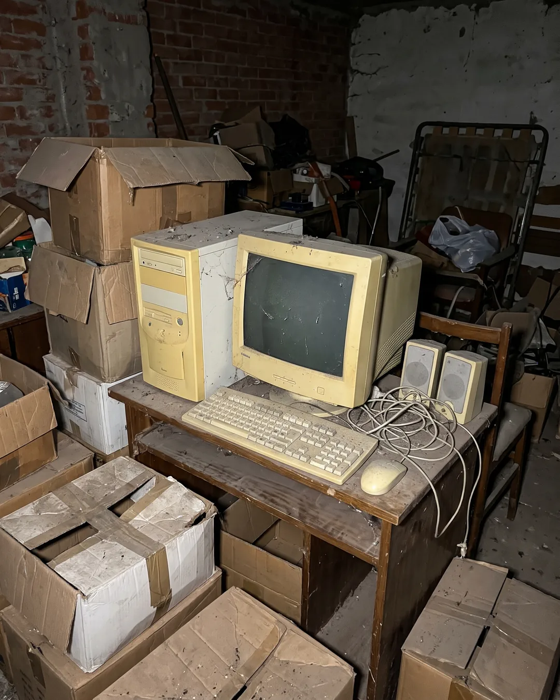

Caso n.º 10 · Ordenadores
Imágenes
-
REAL
Fotografía real
-
IA
La confesión del sospechoso
Un portátil en la cama de noche, con la pantalla como única fuente de luz iluminando las sábanas arrugadas; contenido de la pantalla borroso y mucho ruido en la foto.
-
REAL
Fotografía real
-
IA
La confesión del sospechoso
Un escritorio de oficina con un monitor, teclado y ratón, cables enredados por detrás y un pósit pegado al borde de la pantalla; luz fluorescente fría.
-

IA
La confesión del sospechoso
Un ordenador de sobremesa viejo y amarillento en un trastero, con polvo encima y cajas de cartón alrededor; foto algo oscura con flash directo.
¿Dato o Bulo?
-
DATO «El primer «bug» (error informático) de la historia lo causó un insecto real.»
En 1947, ingenieros del Harvard Mark II hallaron una polilla atrapada en un relé, que provocaba un fallo.
- Grace Hopper la pegó en su cuaderno: «primer caso real de un bicho (bug)».
- Así se popularizó el término.
-
BULO «En 1997, Microsoft desarrolló una interfaz en la que el teclado se sustituía por un piano.»
No hay registro de ningún proyecto de Microsoft que sustituyera el teclado por las teclas de un piano.
-
DATO «Durante 8 años, la contraseña de los ordenadores de los misiles nucleares de EE. UU. fue «00000000».»
En la Guerra Fría, el Comando Aéreo Estratégico fijó con ocho ceros los códigos de lanzamiento de los misiles Minuteman.
- Fue para eludir los bloqueos exigidos por el gobierno de Kennedy.
- Así los operarios no olvidaban la clave y podían lanzar de inmediato.
-
DATO «El primer ordenador analógico de la humanidad se construyó hacia el año 100 a. C.»
Es el mecanismo de Anticitera, un artefacto griego de bronce con engranajes hallado en un naufragio a principios del siglo XX.
- Predecía posiciones astronómicas, eclipses y la fecha de los Juegos Olímpicos.
- Los expertos lo datan entre el 150 y el 100 a. C.
-
BULO «El primer ordenador del mundo pesaba cerca de 100 toneladas.»
El ENIAC, presentado en 1946, pesaba unas 27 a 30 toneladas, muy por debajo de las 100.
- Ocupaba toda una habitación.
- Se considera el primer gran ordenador electrónico de propósito general.